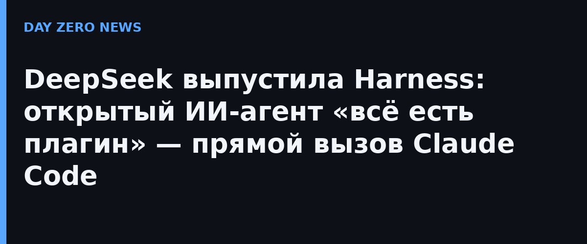

DeepSeek представила Harness (команда `dsh`) — собственный открытый фреймворк для ИИ-агентов. Компания открыла его для тестирования по всему миру и одновременно выложила код на GitHub под лицензией MIT. Продукт работает как десктопное приложение (macOS на Apple чипах и Windows 64-бит) и как локальный веб-сервер по адресу 127.0.0.1:3080; запустить можно одной командой `npx @deepseek-ai/dsh web`. Статус — превью для разработчиков: в README честно предупреждают, что грядут обратно несовместимые изменения, а перед запуском советуют прочитать файл SAFETY.md.
Ключевая идея архитектуры — «всё есть плагин»: инструменты, навыки и даже интерфейс расширенияются плагинами. Harness построен на системе Cordis, чья идеология описана в статье DeepSeek «A Programming Paradigm for Spatiotemporal Composability» на arXiv. Самая эффектная функция — режим «создания»: пользователь описывает нужную возможность разговором, а агент сам пишет плагин, устанавливает его и проверяет. В официальной демонстрации плаги «помодоро» с плавающим таймером собран и проверен за 5 минут 24 секунды. Также в превью заявлены команды агентов, субагенты, терминальный цикл, автоматическая проверка разрешений и запланированные задачи (например, автоматически собирать недельный отчёт по пятницам).
СМИ сразу поставили релиз в один ряд с агентами Anthropic и OpenAI: VentureBeat назвала Harness «открытым соперником Claude Code», LiveMint — «усиленным кодинг-агентом против Anthropic». Это логичное продолжение линии DeepSeek: её API уже понимает формат Anthropic, так что Claude Code можно подключить к моделям DeepSeek без кода, а прошлой компанией была открыта система инференса DeepInfer. Теперь у DeepSeek есть и собственный клиент поверх своих моделей — deepseek-flash (сейчас за ним стоит V4.1-Flash-1017) и deepseek-v4-pro.
По сообщению агрегатора BigGo, часть концепции носит имя Super-agent — прототип, который следит за групповыми чатами разработчиков и сам подхватывает упоминаемые там задачи на кодинг; отдельного официального анонза именно этого компонента нет.
Для рынка агентской разработки это важный сдвиг: раньше открытые «обвязки» вокруг моделей делали в основном сторонние энтузиасты (OpenCode, OpenHands), теперь же в эту нишу вышла лаборатория уровня DeepSeek с собственной моделью, своим хarness'ом и открытой лицензией. Практический путь знакомых с Claude Code короткий: поменять переменные окружения на эндпоинт api.deepseek.com/anthropic — либо ставить dsh целиком и пробовать «создание» плагинов разговором.